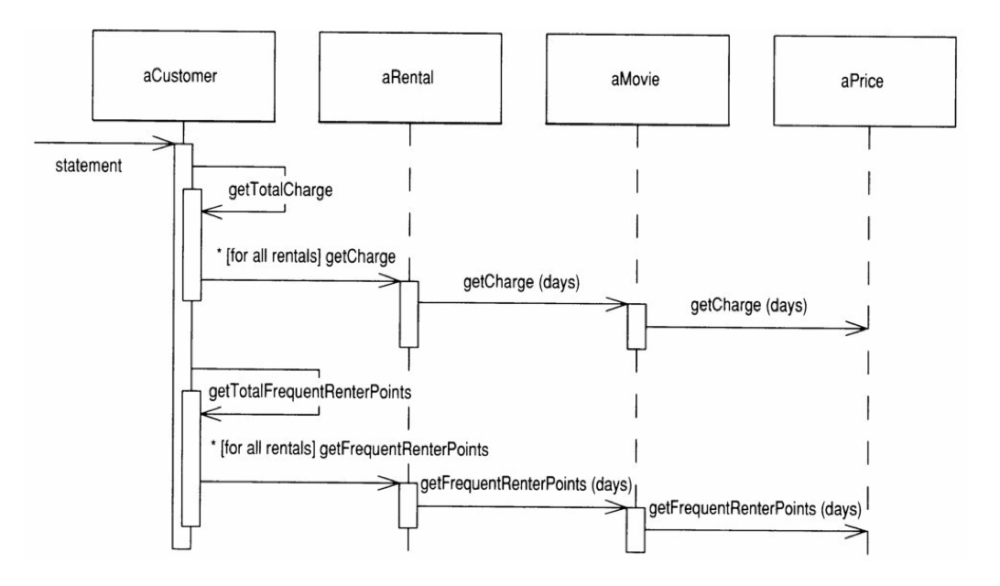
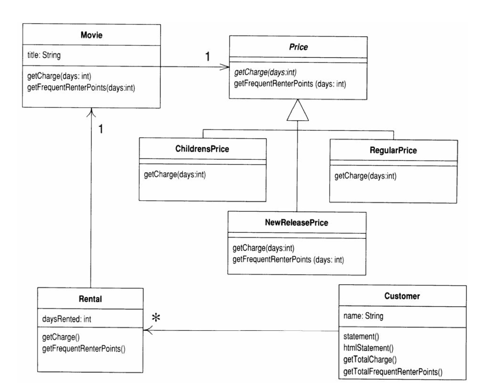

Today I started reading the book recommended at class:
Martin Fowler (feat. Kent Beck) Refactoring: Improving the Design of Existing Code. Addison-Wesley (2012).
I am reading the Chinese translated version, translated by Mr 熊节. I will write my note back in English to reinforce learning.
Introduction
When to Refactor
This is a nice description for when to refactor, which could help me consider how I improve my assignment.
If you want to add a new feature to the program, and the structure of the code makes it inconvenient to do so, then refactor before adding the feature.
Before refactoring
Good tests are the foundation for refactoring!
Refactoring could introduce bugs, so write a reliable testing environment to ensure you don’t break things during refactoring.
Extract methods
The smaller your code block, the easier to manage, change and move them.
To extract methods, you need to find the local variables and parameters.
Any unchanged variables in the long block could be passed to the extracted method/function as arguments.
Be careful with changed variables”. If there is only one variable’s value being changed, it can be the return value of the new argument.
Placing methods in the right place
Most of the time, functions/methods should be put in where the data it uses belongs. This is relatable to a static method I wrote for Kalah:
1 | /** |
To start with it was in the Kalah class because this is where it is used.
Then I moved it to KalahJudge class because I don’t want Kalah to know too much about processes other than driving the game state.
Finally I moved it to KalahPlayer, because:
KalahPlayeris all this method deals with and needs to know;- If I put this “constructor” method in
KalahPlayer, I will be able to makeKalahPlayer‘s constructor private, because this should be the only way to create a validKalahPlayerinstance.
Try to get rid of temporary variables
Temporary variables could be problems. They are only valid in the function they belong to, and therefore could contribute to a long and complex function. It is easy to lose track of temporary variables in a long function.
Performance issue in refactoring
Replacing temporary variables with query could cause performance issue. For example, there might need to be extra loops in the query method. It says could because you never know until you run assessments on the running time. You do not need to worry about this when you refactor. Worry about them when you are optimising - by that time you are at a good position with well-refactored code.
Don’t switch on another object’s attribute
With the Movie and Rental example in the book, getCharges switch among different movie types.
This method is originally in the Rental class and uses the getDaysRented() method belonging to Rental and the getPriceCode() method belonging to Movie:
1 | double getCharge() |
It should be moved to Movie class and pass the result of getDaysRented as an argument.
This is because this method depends on how many possible priceCode there are in Movie.
If the potential change to this system is an addition of new movie type/priceCode, we want to contain the change caused by adding new movie types within the Movie class.
State pattern by Gang of Four
This looks like the Strategy pattern, but is different because Price class represents a “state” of the movie, instead of a “behaviour”. It could be updated from NEW to REGULAR after some time.

Related refactoring technique:
- Replace Type Code with State/Strategy
- Replace Conditional With Polymorphism
Interactions after adding the State pattern:

UML after adding the State pattern:

Principles of Refactoring
What is refactoring
A change to the internal structure of a software to improve its comprehensibility and reduce its maintaining cost, without changing its observable behaviours.
When to refactor
You do not refactor for the sake of refactoring. You have another goal and use refactoring to facilitate that.
Three strikes and refactor
Don Roberts’ “The rule of three”:
The third time you do something similar, you refactor.
Refactor when adding new functionality
- Refactoring helps us understand the code to be modified;
- Refactoring makes the structure clear and easier to be extended.
Changing Published Interfaces when Refactoring
If you change the interface, anything could happen.
The problem with refactoring is that some refactoring techniques DO change interfaces - as simple as Rename Method (273). What’s its impact on the treasured notion of Encapsulation?
- If all callers are under your control, no problem - even with a public interface.
- Published is a step ahead public. If an interface is published, i.e.
Maintain both old and new interfaces
Rewrite old function to call the new one
Don’t copy the function implementation, or you’ll get stuck into code duplication!
Use Java’s deprecation facility
Mark the old interface as deprecated so that your callers will notice.
Try not to publish interfaces unless necessary
Organizations with an overly strong notion of code ownership tend to publish interfaces inside the team too early. This will introduce unnecessary needs to maintain new/old interfaces.
Change your notion of ownership, and let everyone be able to change others’ code to adapt to new interfaces. This will make refactoring much smoother.
A special interface change: adding a new exception in throws clause
This is not change to function signature, so you cannot use delegation to cover it. But the compiler will be unhappy with this change.
To solve this, define a superclass exception for a whole package (such as SQLException for java.sql) and ensure that public methods only declare this exception in their throws clause.
This way, callers will only know the more generic exception, while we could define new subclass exceptions as we need.
When not to refactor
A clear signal for rewriting instead of refactoring is: the current code could not function properly.
Remember, before refactoring, your code should be functional in most cases.
Break into components first
A compromise route is to refactor a large piece of software into components with strong encapsulation. Then you can make a refactor-versus-rebuild decision for one component at a time.